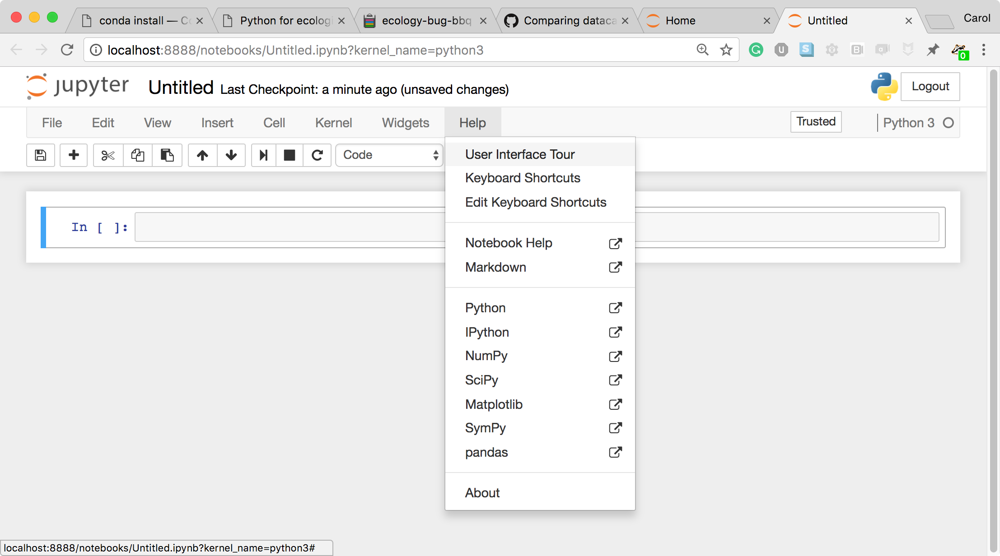
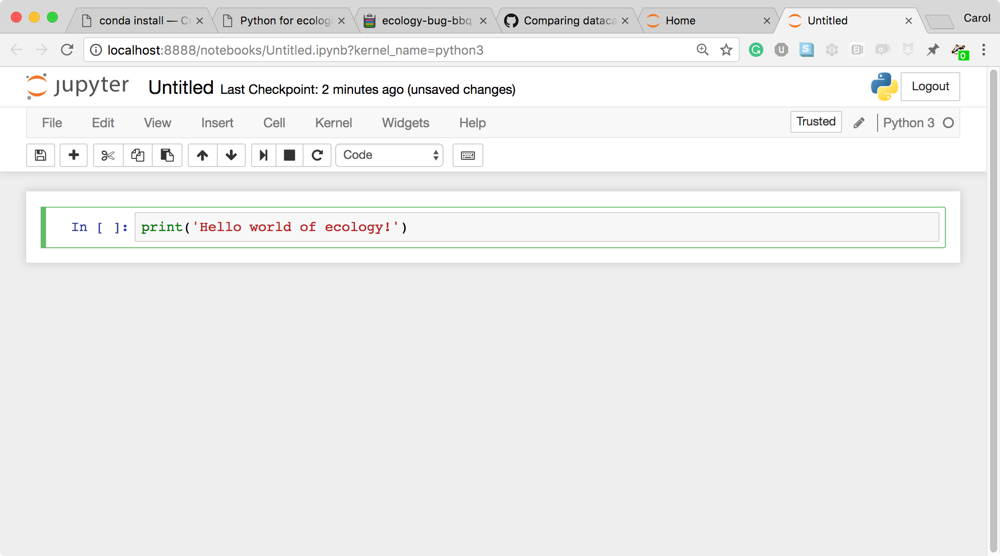
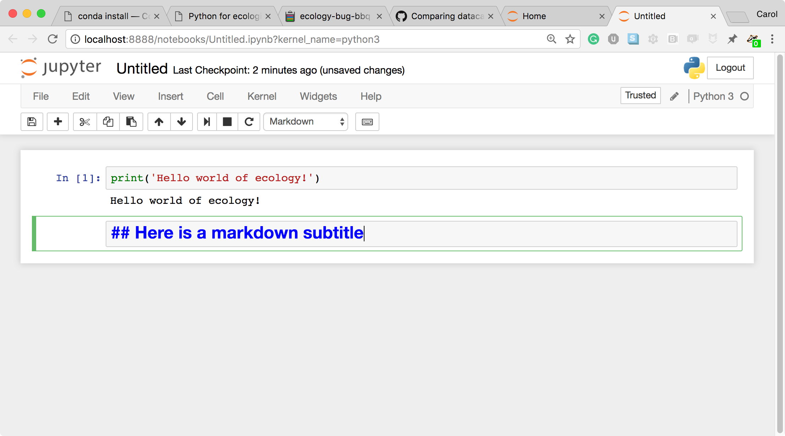

Python for ecologists: Setup
Data
Data for this lesson is from the Portal Project Teaching Database - available on FigShare.
We will use the eight files listed below for the data in this lesson. Download these files to your computer either by clicking this link , which will give you everything in a single compressed file. You’ll need to unzip this file after downloading it.
Or download each file indvidually with the following links:
- surveys.csv
- species.csv
- speciesSubset.csv
- surveys2001.csv
- surveys2002.csv
- plots.csv
- bouldercreek_09_2013.txt
- SQL Database
Software
Python is a popular language for scientific computing, and great for general-purpose programming as well. Installing all of its scientific packages individually can be a bit difficult, so we recommend an all-in-one installer.
For this workshop we use Python version 3.x.
Required Python Packages for this workshop
Install the workshop packages
For installing these packages we will use Anaconda or Miniconda. They both use Conda, the main difference is that Anaconda comes with a lot of packages pre-installed. With Miniconda you will need to install the required packages.
Anaconda installation
Anaconda will install the workshop packages for you.
Download and install Anaconda
Download and install Anaconda. Remember to download and install the installer for Python 3.x.
Miniconda installation
Miniconda is a “light” version of Anaconda. If you install and use Miniconda you will also need to install the workshop packages.
Download and install Miniconda
Download and install Miniconda following the instructions. Remember to download and run the installer for Python 3.x.
Check the installation of Miniconda
From the terminal, type:
conda list
Install the required workshop packages with conda
From the terminal, type:
conda install -y numpy pandas matplotlib jupyter
conda install -c bokeh ggplot
Launch a Jupyter notebook
After installing either Anaconda or Miniconda and the workshop packages, launch a Jupyter notebook by typing this command from the terminal:
jupyter notebook
The notebook should open automatically in your browser. If it does not or you wish to use a different browser, open this link: http://localhost:8888.
Overview of the Jupyter notebook (Optional)

Screenshot of a Jupyter Notebook on quantum mechanics by Robert Johansson
How the Jupyter notebook works
After typing the command jupyter notebook, the following happens:
- A Jupyter Notebook server is automatically created on your local machine.
- The Jupyter Notebook server runs locally on your machine only and does not use an internet connection.
-
The Jupyter Notebook server opens the Jupyter notebook client, also known as the notebook user interface, in your default web browser.

The Jupyter notebook file browser -
To create a new Python notebook select the “New” dropdown on the upper right of the screen.

The Jupyter notebook file browser -
When you can create a new notebook and type code into the browser, the web browser and the Jupyter notebook server communicate with each other.

A new, blank Jupyter notebook -
Under the “help” menu, take a quick interactive tour of how to use the notebook. Help on Jupyter and key workshop packages is available here too.

User interface tour and Help - The Jupyter Notebook server does the work and calculations, and the web browser renders the notebook.
-
The web browser then displays the updated notebook to you.
-
For example, click in the first cell and type some Python code.

A Code cell -
This is a Code cell (see the cell type dropdown with the word Code). To run the cell, type Shift-Enter.

A Code cell and its output -
Let’s look at a Markdown cell. Markdown is a text manipulation language that is readable yet offers additional formatting. Don’t forget to select Markdown from the cell type dropdown. Click in the cell and enter the markdown text.

A markdown input cell -
To run the cell, type Shift-Enter.

A rendered markdown cell
This workflow has several advantages:
- You can easily type, edit, and copy and paste blocks of code.
- Tab completion allows you to easily access the names of things you are using and learn more about them.
- It allows you to annotate your code with links, different sized text, bullets, etc. to make information more accessible to you and your collaborators.
- It allows you to display figures next to the code that produces them to tell a complete story of the analysis.
How the notebook is stored
- The notebook file is stored in a format called JSON and has the suffix
.ipynb. - Just like HTML for a webpage, what’s saved in a notebook file looks different from what you see in your browser.
- But this format allows Jupyter to mix software (in several languages) with documentation and graphics, all in one file.
Notebook modes: Control and Edit
The notebook has two modes of operation: Control and Edit. Control mode lets you edit notebook level features; while, Edit mode lets you change the contents of a notebook cell. Remember a notebook is made up of a number of cells which can contain code, markdown, html, visualizations, and more.
Help and more information
Use the Help menu and its options when needed.